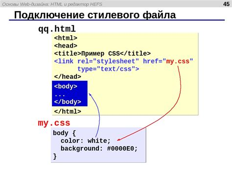

В параграфе 1 будет применен стиль и будет расказано об устройстве файла css. Для начала файл css подключают в теге head. Далее в самом файле css описывают теги h, p и другие для описания цвета и шрифта.
Ссылка на документацию CSSТакже можно подключить файл css внутри тега style. Чтобы понять, к какому тегу относится стиль, используют селекторы. Внутри селекторов описываются свойства и значения.
